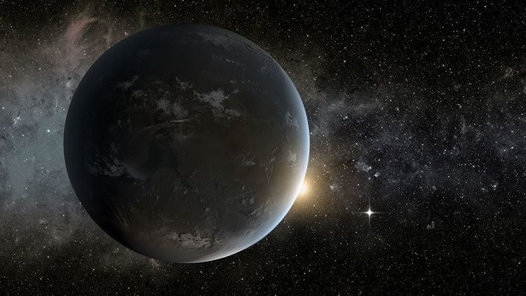
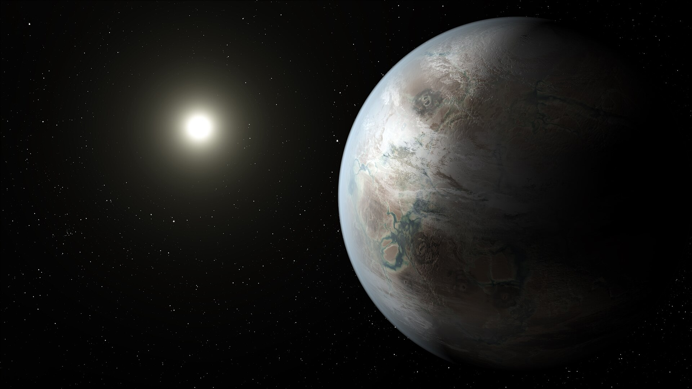
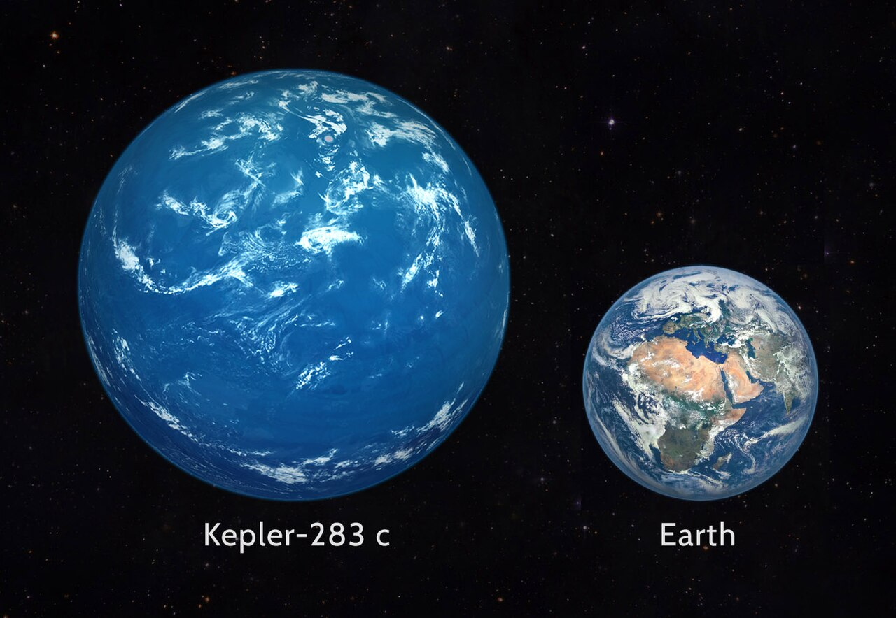

Earth's mass
About 71% of the surface is water, but the oceans make up only around 0.02% of Earth's total mass.
96.5% of Earth's water is in the oceans, 2.5% is freshwater, about 1% is salty water in the ground.
Explore our planet:
About 71% of the surface is water, but the oceans make up only around 0.02% of Earth's total mass.
96.5% of Earth's water is in the oceans, 2.5% is freshwater, about 1% is salty water in the ground.
Trees communicate and share nutrients through underground fungal networks, sometimes called the “wood wide web”.
Read about it
Kepler-37c is an exoplanet discovered in 2013. With an orbital period of 21 days.
It is located 209 light-years away.

Kepler-452b (sometimes quoted to be an Earth 2.0 or Earth's Cousin), is a disputed super-Earth exoplanet.

Kepler-283 c is an exoplanet orbiting the K-type star Kepler-283, discovered by the Kepler space telescope in 2014
The planet orbits its star every 93 days